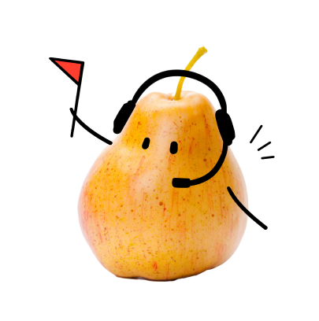
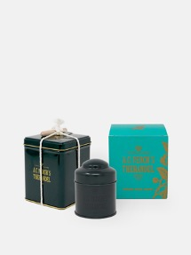

만능 서포터 배
전부 나에게 맡겨!
믿음직하고 든든한 당신!
편견도 없고, 사람을 너무 좋아해서 사회 적응이 빠릅니다.
배려심 넘치고 책임감이 넘쳐
수습하거나 중재하는 역할을 잘할 수 있죠.
도움을 주는 행동이 당신에게는 너무 당연하며, 인정 욕구가 강합니다.
당신이 열정적인 모습은 좋지만, 과도해질 때가 많으니
열기를 식힐 수 있는 차를 추천해드릴게요
추천 차
TWG - Paris Singapore
(teabags, caffeine)
향긋한 벚꽃과 붉은 과일을 더한 녹차예요.
다정한 당신만큼이나 향긋한 벚꽃향과 붉은 과일향을 입힌
뚜렷한 의견을 가진 당신과 비슷한 녹차를 추천할게요!